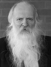

Guest Speakers
Bruce Herman
PCPC Arts Festival Announces Special Guest Juror and Speaker for 2012: International Artist and Fine Art Professor, Bruce Herman.
More about Bruce Herman
"An Art of Real Presence: Broken for Healing," an evening with Bruce Herman
March 1, 2012 at 7:00 pm
Photos
from the evening with Bruce Herman, "An Art of Real Presence: Broken for Healing."
David Goa
David J. Goa counts Paul Tillich, the philosophical theologian, Mircea Eliade, the historian of religion and Jaroslav Pelikan, the eminent historian of Christian ideas as his teachers along with his father, a carpenter, wonderful Bible teacher and the last European pietist to be buried on the Canadian prairies. David is Director of the Chester Ronning Centre for the Study of Religion and Public Life, Augustana campus, University of Alberta, the first such centre in a public university in Canada. Prior to this appointment he developed the program for the study of culture at the Royal Alberta Museum in Edmonton over three decades.
His work and thinking were largely shaped through his field research work exploring living religious traditions and their encounter with modernity. He has published widely on religion and modernity, on the Orthodox tradition of Christianity, art and culture, and the challenges of the modern world to the human spirit. David is also a regular contributor to the media on religious matters. In the year 2000 he developed a major exhibition using over 300 artistic works to explore the meaning of Jesus in the development of the culture of the West. He is also the chief curator for a major international exhibition slated for 2011 title, U: Rediscovering the Human Spirit, which will use first tier artistic works to explore, in the public setting of art galleries, the meaning of the Incarnation in unveiling the mystery of being human.
Register for Opening Art Award Ceremony with David Goa
Opening Art Award Ceremony with David Goa
March
24, 2012 at 2:00 pm
Gregory Wolfe
Art+Spirit: "Saying it without Saying it: How to Talk about Art (and Faith)"
an evening with Gregory Wolfe
January
24, 2012 at 7:00 pm
Writer, teacher, publisher, and editor, Gregory Wolfe has been called "one of the most incisive and persuasive voices of our generation" (Ron Hansen). Both as a thinker and institution-builder, Wolfe has been a pioneer in the resurgence of interest in the relationship between art and religion—a resurgence that has had widespread impact both on religious communities and the public square. As an advocate for and exemplar of the tradition of Christian Humanism, Wolfe has established a reputation as an independent, non-ideological thinker—part gadfly, part peacemaker.
In 1989, Wolfe founded Image: Art, Faith, Mystery, which Annie Dillard has called "one of the best journals on the planet." Now one of America's top literary quarterlies, Image is a unique forum for the best writing and artwork that is informed by—or grapples with—religious faith. Material first published in Image has appeared in Harper's, Utne Reader, and the Wilson Quarterly as well as the Pushcart Prize anthology, Best American Essays, Best American Poetry, Best American Spiritual Writing, O. Henry Prize Stories, The Art of the Essay, New Stories from the South, and Best American Movie Writing. Image has also been nominated by Utne Reader for an Alternative Press Award for Spiritual Coverage. Recent, Image's Glen Workshop was featured on the public television program Religion and Ethics Newsweekly.
Since 2000, Wolfe has served as Writer in Residence at Seattle Pacific University, where he teaches English literature and creative writing. He is also the founder and director of the Master of Fine Arts in Creative Writing at SPU, the first program of its kind to integrate a studio writing degree with intensive reflection upon the literary and aesthetic riches of the Judeo-Christian tradition.
Wolfe has published over 200 essays, reviews, and articles in numerous journals, including Commonweal and First Things. His essays have been anthologized in collections such as The Best Christian Writing and The Best Catholic Writing.
Among his books are Intruding Upon the Timeless: Meditations on Art, Faith, and Mystery (Square Halo, 2003), Malcolm Muggeridge: A Biography (Eerdmans, 1997) and Sacred Passion: The Art of William Schickel (University of Notre Dame Press, 1998). Wolfe is also the editor of The New Religious Humanists: A Reader (Free Press, 1997) and the co-author of Books That Build Character (Touchstone, 1994), Climb High, Climb Far (Fireside, 1996), The Family New Media Guide (Touchstone, 1997), Circle of Grace: Praying with—and for—Your Children (Ballantine, 2000), and Bless This House: Prayer for Families and Children (Jossey-Bass, 2004). A collection of Wolfe's essays, tentatively titled Beauty Will Save the World, will be published by ISI Books in fall 2010 or early 2011. Wolfe is currently writing a book about the Renaissance Christian Humanists who gathered around the great scholar and writer, Desiderius Erasmus.
The working title of that book is The Company of Good Letters: How Erasmus and His Circle of Renaissance Christian Humanists Shaped the Modern World. Wolfe was born in 1959 and grew up in New York City, Long Island, and the south shore of Boston. He received his B.A., summa cum laude, from Hillsdale College in Michigan and his M.A. in English literature from Oxford University.
Pete Deison
 Founder of the PCPC Arts Festival, Dr. Peter Van Deison (“Pete”) is a pastor, teacher and author. He has served as a pastor in the PCA since 1978. Currently he is the pastor of Discipleship and Outreach at Park Cities Presbyterian Church in Dallas. He oversees the men’s Ministry and teaches a large Sunday School class composed of the mid-lifers of PCPC. Author of three published works, Pete currently has several other works in progress. Dr. Deison travels the world and has experienced the countries of Belgium, France, Netherlands, Germany, Switzerland, Scotland, Turkey, Chad, Thailand, Guatemala, Panama, South America, Australia, New Zealand, Greece, the Holy Lands (on numerous occasions), Mexico, and Ukraine (on two occasions). He shares his life with his wife, Harriet; two grown daughters, Mrs. Ginny Huntress and Mrs. Ann Drexler and eight grandchildren.
Founder of the PCPC Arts Festival, Dr. Peter Van Deison (“Pete”) is a pastor, teacher and author. He has served as a pastor in the PCA since 1978. Currently he is the pastor of Discipleship and Outreach at Park Cities Presbyterian Church in Dallas. He oversees the men’s Ministry and teaches a large Sunday School class composed of the mid-lifers of PCPC. Author of three published works, Pete currently has several other works in progress. Dr. Deison travels the world and has experienced the countries of Belgium, France, Netherlands, Germany, Switzerland, Scotland, Turkey, Chad, Thailand, Guatemala, Panama, South America, Australia, New Zealand, Greece, the Holy Lands (on numerous occasions), Mexico, and Ukraine (on two occasions). He shares his life with his wife, Harriet; two grown daughters, Mrs. Ginny Huntress and Mrs. Ann Drexler and eight grandchildren.
Educational Background
B.A. University of Texas (1968); Th.M., Dallas Theological Seminary (1978); Ph.D.; The Fielding Institute (1994)